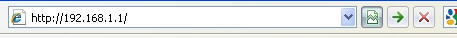
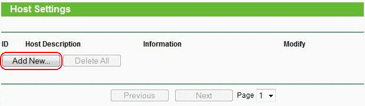
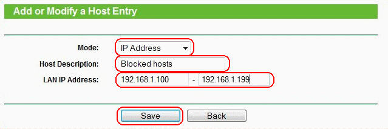
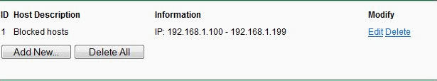
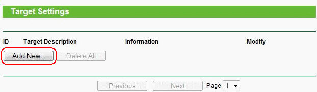
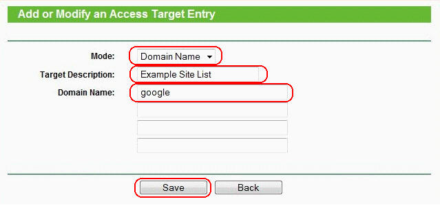
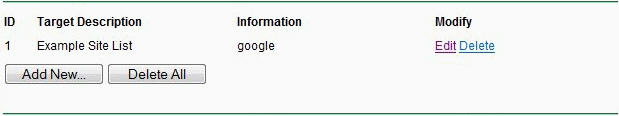
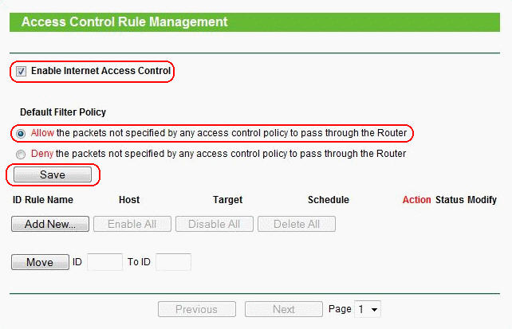
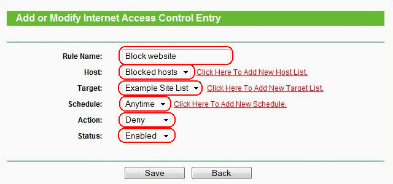
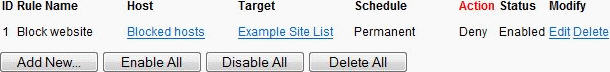

Как настроить блокирование веб-сайтов в контроле доступа?
На беспроводных маршрутизаторах TP - LINK можно настроить блокировку сайтов, для этого необходимо выполнить следующие шаги (возьмем в качестве примера TL - WR 1043 ND).
Шаг 1: Вход в панель управления маршрутизатора
Откройте веб-браузер и введите в адресную строку LAN IP -адрес вашего маршрутизатора ( IP -адрес маршрутизаторов TP - LINK по умолчанию - 192.168.1.1), затем нажмите Enter .

Когда вам будет предложено, введите имя пользователя и пароль маршрутизатора TL - WR 1043 ND (имя пользователя и пароль по умолчанию - admin )
Шаг 2: Создание перечня компьютеров, для которых настраивается блокировка доступа к сайтам
Зайдите Access Control (Контроль доступа)-> Host (Узел), затем нажмите " Add New ..." ( Создать …)

Выберите " IP Address ", затем укажите краткое описание правила, которое вы хотите задать в поле "Host Description :" (Описание узла). Введите диапазон IP -адресов вашей сети, для которых вы хотите заблокировать доступ на нежелательные сайты (например, если указать 192.168.1.100 - 192.168.1.199, то будет происходить блокировка для всех компьютеров, которым автоматически маршрутизатор TL - WR 1043 ND назначает IP -адрес).
На примере ниже показано создание списка компьютеров с IP 192.168.1.100 - 192.168.1.199. Наименование списка задано как "Blocked hosts":

Нажмите " Save " (Сохранить) – новый перечень узлов появится на странице "Host Settings " (Настройки узла):

Шаг 3: Создание перечня нежелательных сайтов
Зайдите в меню Access Control (Контроль доступа) -> Target (Цель), затем нажмите " Add New ..." ( Создать )

Выберите "Domain Name" (Доменное имя) в поле "Mode" (Режим), затем укажите краткое описание создаваемого перечня. В поле (в 4-х полях) "Domain Name :" (Доменное имя) введите ключевые слова сайтов, которые вы хотите, чтобы маршрутизатор блокировал (не обязательно полные названия сайтов, таких как www.google.com – можно просто указать google – и вы создадите правило, согласно которому будет производиться блокировка всех сайтов, которые в своем адресе содержат слово "google ")

Нажмите " Save " (Сохранить) – новый список нежелательных сайтов отобразиться на странице "Target Settings" (Настройки цели).

Шаг 4: Создание правил блокировки нежелательных сайтов
Зайдите в Access Control (Контроль доступа) -> Rule (Правило) и отметьте "Enable Internet Access Control" (Включить контроль доступа в Интернет), затем выберите опцию " Allow the packets not specified by any access control policy to pass through the Router" (Позволить пакетам не указанным политикой контроля доступа проходить через маршрутизатор) (если будет установлена опция " Deny " (Запретить), все веб-сайты, кроме тех, для которых вы задали правила узла/цели будут заблокированы), затем нажмите " Save " (Сохранить).

В разделе меню Access Control (Контроль доступа) -> Rule (Правило) нажмите " Add New ..." (Создать), затем введите краткое описание правила:
Ниже укажите параметры:

Нажмите "Save" (Сохранить). Новое правило контроля доступа появится на странице "Access Control Rule Management" (Управление правилом контроля доступа):

Шаг 5: Проверка блокировки
Чтобы проверить добавленное правило, попытайтесь зайти на сайт, который вы заблокировали с любого компьютера в пределах диапазона IP -адресов, которые вы указали в перечне компьютеров на Шаге 1 (напимер, откройте в браузере http://www.google.com). Веб-сайт будет заблокирован и ваш веб-браузер будет выдавать сообщение что этот сайт/сервер не может быть найден.